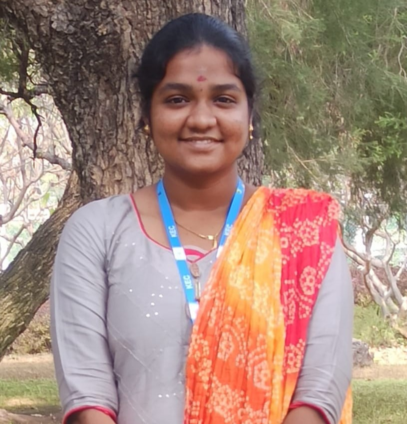

<html>
    <head>
        <title>Resume</title>
    </head>
</html>
<body>
    <fieldset>
    <h2 style="color:blue;" >SUBIGA G</h2> 
     
     <body style="background-color:powderblue;"></body>
    <h4>e-Mail: subigagunaseelan@gmail.com</h4>
    <h4>Mobile: 9345654321</h4><hr>
    <h3 style="color:blue;" ><u>CAREER OBJECTIVE</u></h3>
    <P>To be committed and efficient in my work and to enhance the growth of the organization by
    improving and applying my competency at work.</P>
    <h3 style="color:blue;" ><u>EDUCATIONAL QUALIFICATIONS</u></h3>
    <P>• Pursuing B.Tech in Information Technology at Kongu Engineering College, Perundurai with a
        CGPA of 9.62 (till 3rd semester)<br>
        • Completed SSLC in 2018 at Alagappa Girls Matriculation Higher Secondary School, Karaikudi
        with 98%<br>
        • Completed HSC in 2020 at Vivekananda Matriculation Higher Secondary School, Namakkal with
        88.33%</P>
        <h3 style="color:blue;" ><u>SKILL SET</u></h3>
        <P>• Languages known: C, Java.</P>
        <h3 style="color:blue;" ><u>AREA OF INTERST</u></h3>
        <P>• Web Technology<br>
           • Machine learning and Artificial Intelligence</P>
        <h3  style="color:blue;"><u>PAPERS PRESENTED</u></h3>
        <p>• “MINI CHEETAH ROBOT (ROBOTICS)” in ‘SIGNIN’21 at KEC</p>
        <h3 style="color:blue;" ><u>COURSES COMPLETED</u></h3>
        <P> Android Application Development for beginners.<br>
             One credit course on Version controls using Github.<br>
             Zero coding: Data analysis for IoT using node red.</P>
        <h3 style="color:blue;" ><u>MEMBERSHIP</u></h3>
        <P>• National Cadet Corps in School(JW) and college(SW)<br>
           • Executive member of EEC club KEC</P>
        <h3 style="color:blue;"><u>LANGUAGES KNOWN</u></h3></u>
        <P>Tamil,English,Hindi</P>
        <h3 style="color:blue;"  ><u>PROFILE</u></h3>
        <table style="width:40%">
            <style>
                table, th, td {
                  border:1px solid black;
                }
                
                </style>
            <tr>
                <th align="left">Name</th>
                <td>Subiga G</td>
            </tr>
            <tr>
                <th align="left">Date of birth</th>
                <td>28/08/2002</td>
            </tr>
            <tr>
                <th align="left">Father's name</th>
                <td>Gunaseelan M</td>
            </tr>

            <tr>
                <th align="left">Mother's name</th>
                <td>Kavitha G</td>
            </tr>
            
            <tr>
                <th align="left">Permanent adress</th>
                <td>2/3628 B Nehrunagar ,Second street, Vairavapuram,
                    Karaikudi – 630 003</td>
            </tr>
            
        </table>
        
        <h3 style="color:blue;"><u>REFERENCE</u></h3>
        <P>Dr. R.Thangarajan,<br>
            Professor &amp; Head<br>
            Dept of Information Technology<br>
            Kongu Engineering College, Perundurai-638060<br>
            e-mail id : hod_it@kongu.ac.in<br>
            Contact No : 04294-226570</P>
    </fieldset>  
</body>
